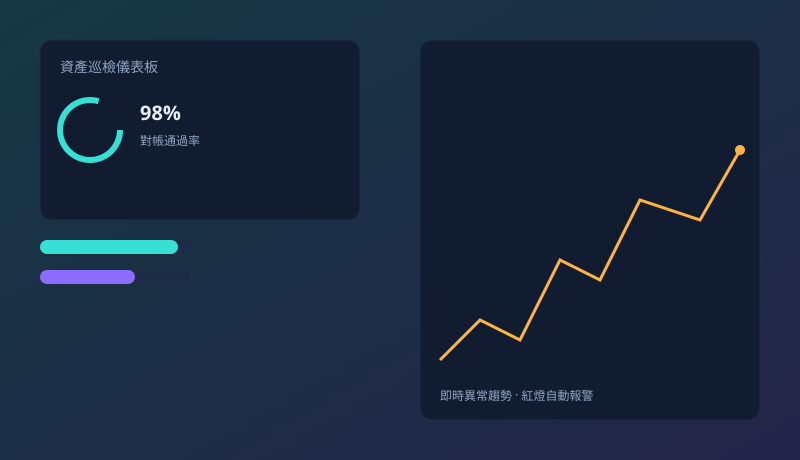

主動資運工作室
把混亂，變成您看得懂的秩序
我們幫企業把重要數字看牢：系統自動巡檢，一出問題就主動報警，不讓您等到月底才發現怪事。過程透明、價格清楚，沒有黑箱——因為我們相信，您有權利親手驗證每一筆交付。

系統 24 小時自動巡檢中
0數字都可對帳查證
0資產面向全面照顧
0不藏隐性費用
0異常主動報警
我們幫企業把重要數字看牢：系統自動巡檢，一出問題就主動報警，不讓您等到月底才發現怪事。過程透明、價格清楚，沒有黑箱——因為我們相信，您有權利親手驗證每一筆交付。
不懂技術也沒關係——下面三張卡，就是我們替您解決的三件最頭痛的事。每一件，背後都有您能親手核對的證據。

報表、對帳、串接各平台資料這種瑣事，我們寫成自動程式，每天準時跑好，不必人工點。每跑一次都留不可竄改的指紋。
重要指標集中在一個畫面：哪裡變紅、哪裡異常，一眼就看到，開會時直接打開就能講。每一步都有操作軌跡可查。
從需求、做法到驗收標準，我們用白話寫成文件，讓您和團隊都看得懂、驗得過。拒絕「您只能相信我們」的黑箱。
這三件事，是我們和「只交一份報告就叫完工」的廠商最大的不同。
每一份交付都有清楚的驗收標準，您隨時能核對對不對，而不是「相信我們說的」。我們把對帳方式寫進合約附件。
數字異常、資料斷線，系統會主動標紅並通知，不用等您自己發現。小問題在變大事之前，就被攔下。
依專案大小一次報價，含什麼、不含什麼都寫明白，不中途加價。我們不靠事後追加費用賺錢。
影片裡點名「AI 爛貨」的根因：每個人都下同一類 prompt，模型吐出同一套結果（通用字、靛紫漸層、永遠三卡、毛玻璃）。我們的應對是——先有 codified 設計系統，再用「屬於自己的生成資產」填充。這一頁本身就是證明。
拉丁與數字走 Space Grotesk（工程幾何感），中文走 IBM Plex Sans TC——擺脫「系統字主導」的 AI 味，建立可識別的字形簽名。
字階、間距、容器寬、圓角全以黃金比收斂成令牌，消除散彈魔法數字——告別「每次重下 prompt」的隨機感。
極光 canvas、滾動刷幀短片、可穿牆傳送門——都是「能玩能驗、屬於我們自己」的資產，而非模板套圖。
每筆交付留不可竄改指紋、每個聲稱可被打臉——「不黑箱」在視覺與工程面統一。
下面每一件都是我們「不黑箱、能親手驗」承諾的具體證明：從高維度空間的互動字幕配音，到可玩的圖學示範與遊戲 SOP。點進去就能玩、能對帳。
13 章中英雙語字幕，搭配 TTS 英語配音，時間軸同步高亮。每一段都可對帳、可重現——這頁本身就是「資訊可被驗證」的示範。
這一區把平常藏在論文裡的物理與數學，翻成主管與團隊都看得懂、且每條聲稱都能被數據打臉的白話筆記。每一篇都自帶圖解與可證偽查核——這正是我們「不黑箱、能親手驗」承諾在知識面的體現。
用統計力學視角拆解深度學習為什麼貴、雙重下降即堵塞相變、深網如何自發萃取抽象，並專章談「混合成本」與「可合算維度」——教你在簽核前判斷這筆 AI 預算該不該花。含 5 幅內聯 SVG 與 A–F 可證偽聲稱。
從幾何面積、反微分運算，到「累積機器」——如何一眼讀懂滿是積分號的式子。同樣自帶 KaTeX 公式與內聯 SVG 圖解，單檔可離線開啟。
把一篇 38 分鐘的英文影評獨白，解剖成 6 張核心論點卡與 7 章中文敘事：感覺勝於證明、拍電影的寓言、Mal＝創作者幽靈、我們就是 Cobb、劇本要的是人生。含原始字幕與清洗全文下載。
這支短片是「主動資運」的視覺隱喻：金與紫的極光緩緩流動，中心週期性擴散的脈衝，就像我們的系統在 24 小時裡不斷替您巡檢、一有異常就亮起紅燈。純程式化生成，無任何外部素材，每一幀都可重現、可對帳。
這支短片有人物、有場景，跟著您的捲動軸前進或倒退——往上滑回頭看、往下滑續看。也可以鎖定方向，讓它單向循環。